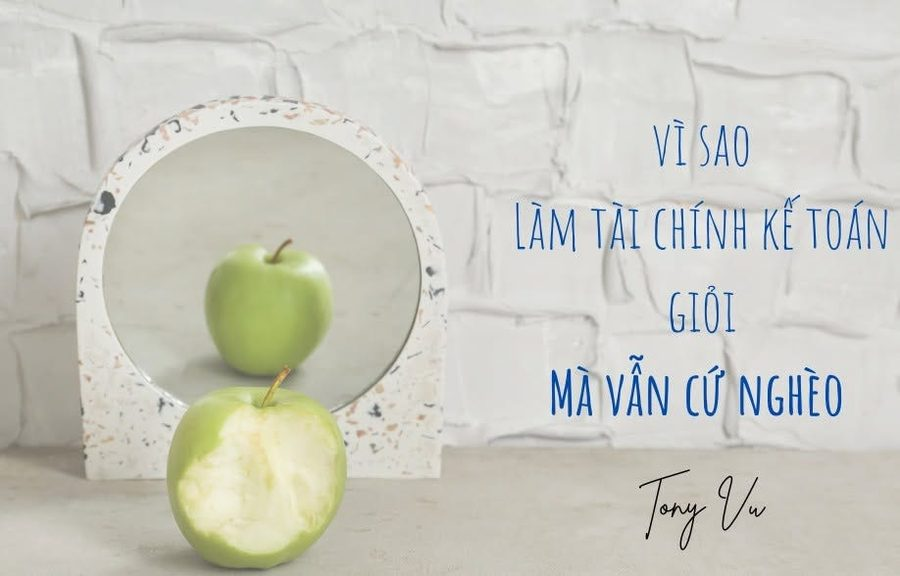
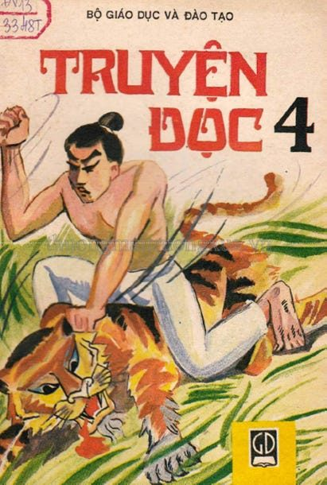

Nhật ký CFO
Giữa những lý thuyết trên sách vở và thực tế sinh tồn của một doanh nghiệp hay cá nhân là một khoảng cách rất xa.
Bản tin cá nhân của thầy trên Substack — hơn 1.000 người đăng ký. Nơi viết những bài dài không vừa trong một buổi học: tài chính doanh nghiệp, chứng chỉ quốc tế, và chuyện đi làm quản trị.
Bản tin này viết về gì
Lời tự giới thiệu trên trang About của bản tin.


Khoảng cách cần thu hẹp
“Trong 14 năm gắn bó với nghề tài chính, kế toán và kiểm toán, tôi nhận ra một điều: giữa những lý thuyết trên sách vở và thực tế sinh tồn của một doanh nghiệp hay cá nhân là một khoảng cách rất xa.” Bản tin ra đời từ chính nhu cầu thu hẹp khoảng cách đó.
“Những viên thuốc đắng”
Mô tả của chính tác giả: bài học thực chiến, đôi khi là thuốc đắng nhưng giúp giải quyết tận gốc vấn đề. Bốn nhóm nội dung: tài chính doanh nghiệp & thuế · chuyện nghề & vận hành · tài chính cá nhân · kinh nghiệm theo đuổi ACCA và các chứng chỉ khác.
Sáu chuyên mục
Tài chính doanh nghiệp · Học tập suốt đời · Tài chính cá nhân · Học ACCA · Phát triển bản thân · Hành trình của tôi
Bài mới
12 bài gần nhất — bấm vào tiêu đề để đọc trên Substack.
Một vòng lặp đáng ngẫm của dân công sở và 3 bước thực tế để không lãng phí nốt năm 2026.
Thực ra là cho cả 2027 nữa
Case study: Cuộc đua thị phần ngành bán lẻ dược phẩm - Khi quy mô không phải là tất cả
Nhìn lại hành trình xoay chuyển cục diện giữa Long Châu và Pharmacity (Cập nhật đến năm 2026)
Tại sao bạn vẫn chết chìm trong đống số liệu dù phao cứu sinh đã được ném tận tay?
Căn bệnh thích ngồi chờ “phép màu” của dân tài chính kế toán, và cách duy nhất để tự giật lại sinh mệnh sự nghiệp của chính bạn.
Tiết kiệm là trò chơi của người nghèo? (Thật không?)
Saving là trò chơi của người giàu, còn saving với người nghèo chỉ giúp mình bớt nghèo hơn thôi. Nghe vậy thôi chứ đó vẫn là 1 nửa của bức tranh
Tài chính cá nhân (9): bạn có đang thực sự tiết kiệm được tiền không?
(Hay chỉ đang nai lưng ra để nuôi dưỡng cái tôi?)
Chi tiêu sao cho mỗi đồng tiền đều hạnh phúc
5 câu hỏi giúp bạn chi tiêu một cách khôn ngoan
Làm thế nào có một sự nghiệp Tài chính kế toán thành công và dài hạn
Dù làm CFO hay chỉ là kế toán tổng hợp
Đọc nhiều nhất
Theo số lượt thả tim trên bản tin (ghi nhận 23/11/2026).
Nếu bạn muốn phát triển bản thân trong năm 2026, có lẽ bạn cần để ý đến lời nói dối này (của toán học) và 1 sự thật của 10 năm
Thực ra không chỉ 2026. Năm nào cũng vậy thôi. Same as ever.
TẠI SAO ĐỌC 50 CUỐN SÁCH MỘT NĂM CÓ THỂ LÀ KHOẢN “ĐẦU TƯ LỖ” LỚN NHẤT CỦA BẠN?
Đừng tự hào vì bạn có một kho tri thức đồ sộ. Trong báo cáo tài chính, kho hàng quá lớn là dấu hiệu của một doanh nghiệp sắp chết vì tắc dòng tiền.
Bí mật của những con số: Vì sao lương 'trung bình 50 triệu' nhưng bạn vẫn nghèo?
Cách tránh bị dữ liệu thao túng
Danh mục lấy trực tiếp từ API của bản tin (50 bài, 22/02/2025 → 10/11/2026), không chép tay. Bài đầy đủ nằm trên Substack — trang này chỉ liệt kê tiêu đề, ngày và mô tả ngắn.